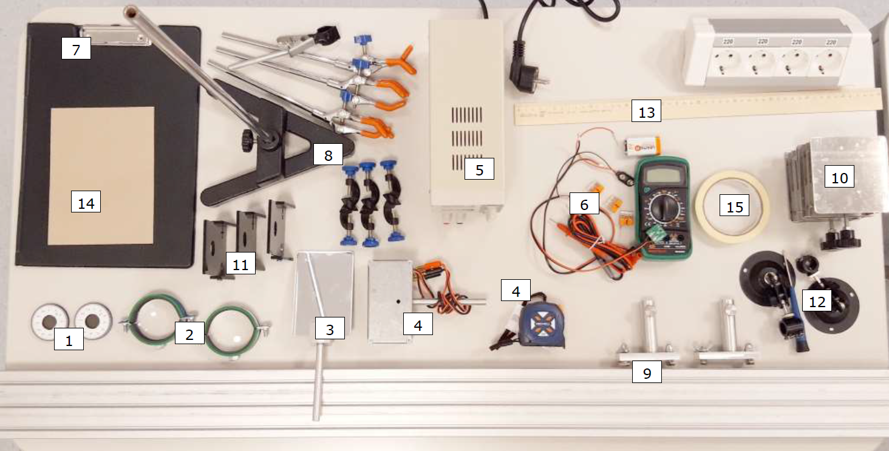

Fig. 3.
Y21 (2021) — English translation
This experiment is a large-scale study of polarization and its applications.
$\textbf{Внимание!}$ Error estimation is NOT required in all parts of the experiment! $\textbf{Внимание!}$ It is prohibited to put inscriptions/marks on protractors and other elements of equipment! Having previously glued the masking tape, you can write on it.
Polarizers (2 pcs.) with known transmission planes (allowed direction: $0^{\circ}-180^{\circ} (\pm5^{\circ})$). The polarizers are enclosed in round black frames with a wide inner window: its diameter is $2~см$ Lenses (2 pcs.) Mirror Incandescent lamp Constant voltage source $\textbf{(не подавать на лампу напряжение выше 12 В!)}$ (it is easy to select the required pair of plugs by testing the connection of each pair to the source) Light sensor: magnetic photodiode, multimeter, Krona battery, terminal block, Wago clamps (3 pcs.), 10 kOhm resistor Screen with magnetic surface, with fastening for a sheet of paper Tripod with couplings (3 pcs.) and claws (3+1 pcs.) Optical bench with 2 raters Lifting tables (2 pcs.) Magnetic holder (3 pcs.) of polarizers and plates Laser holder (2 pcs.) (with screwdriver) Ruler Cardboard Masking tape Scissors and paper (on request)

The light sensor should be assembled according to the given diagram, turning on the 10 kOhm resistance given to you as a resistor. Pay attention to the polarity of the connections!
Plates (10 pcs.) Stationery clip
Often there is a need to obtain high-power polarized light. Unfortunately, conventional polarizers cannot perform this task, since they burn out at such a high light intensity, so a “Stoletov stop” is used: a set of glass plates pressed together, located at a Brewster angle to the incident beam. It is known from theory that if a beam is incident on a plate at the Brewster angle, then the reflected light is completely polarized, and the transmitted light is partially polarized.
Next, you have to determine the degree of polarization of the light passing through Stoletov’s foot, depending on the number of glass plates in its composition. When assembling the experimental setup, you can use any equipment provided to you to adjust the heights.
Red and green lasers with clip 2 AAA batteries (for lasers) Glass bottom tube Sugar syrup (2 jars) Container (for draining) Paper napkins (as required)

Some chemical compounds have optical properties. In particular, in this part of the problem we will study the rotation of the plane of polarization when linearly polarized light passes through sugar syrup.
Wave plates No. 1, No. 2. The plates are enclosed in round black frames with a narrow inner window: its diameter is $1~см$ 3D glasses No. 1, No. 2 Lens with diffraction grating Green laser with clip 2 AAA batteries (for laser)

A wave plate is a plate made of a uniaxial crystal, the optical axis (the direction of which is set by the unit vector $\vec{y}$) lies in its plane. In the wave plate, between the ordinary beam ($\vec{E} \perp \vec{y}$) and the extraordinary one ($\vec{E} \parallel \vec{y}$), a path difference $\Delta n l$ arises, where $\Delta n$ is the difference between the refractive index for the ordinary beam and the extraordinary one, and $l$ is the thickness of the plate. Usually this path difference is formulated in terms of a certain wavelength: 1. Half-wave ($\lambda/2$) plates $\Delta n \cdot l = \left( m + \dfrac{1}{2} \right) \lambda$; 2. Quarter-wave ($\lambda/4$) plates $\Delta n \cdot l = \left(m + \dfrac{1}{4} \right) \lambda$ or $\Delta n \cdot l = \left(m + \dfrac{3}{4} \right) \lambda$. Let's take the green laser wavelength as a reference: $\lambda_\text{g}=532~\text{нм}$.

The opportunities that wave optics gives us have been used in everyday life for a long time. In the following paragraphs you will have to make assumptions about how 3D glasses work. Make explanatory drawings and, if possible, measure their characteristics for some elements. If your circuit includes a plane-parallel plate, then indicate its optical thickness $nl$. If your diagram includes a lens, then indicate its focal length $f$. \item If your circuit includes a color filter, then indicate the characteristic wavelengths of the transmission and absorption bands. If your circuit includes a polarizer, then indicate the angle between the transmission plane and the vertical. If your design includes a waveplate, then specify its “optical thickness” $\Delta n \cdot l$ in terms of the wavelength of the green laser. For example, $\Delta n \cdot l = 20.21 \lambda_\text{g}$.
The opportunities that wave optics gives us have been used in everyday life for a long time. In the following paragraphs you will have to make assumptions about how 3D glasses work. Make explanatory drawings and, if possible, measure their characteristics for some elements.
Source: https://pho.rs/p/241